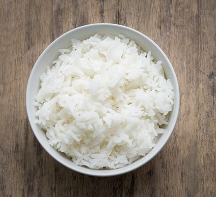

White Rice

How to cook white rice
White rice is a simple and filling dish to get you full and satisfied with little trouble.
Ingredients
Steps
- Add rice to a medium size pot.
- Add water.
- Add salt.
- Bring to a boil.
- Drop to a simmer
- Cover.
- Cook for 18 minutes.
- Let sit for five minutes.
- Fluff with a fork.
Back Home